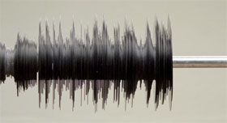

I Will never change (Benga)

Us – GB 2012 – 2 Min. – HD-file
R: Us – P: Academy Films – Label: Columbia Records
Eine aufwändige Arbeit zum Thema analog & digital des Design-Teams Us. Am Anfang stand die Frage: Wie viele Platten braucht man für eine Sekunde? Für die zweiminütige Animation wurden 960 von Hand produzierte Schallplatten in sieben Tagen ausgemessen, zurechtgeschnitten, etikettiert und poliert. – Internationale Kurzfilmtage Oberhausen
Us ist ein Regisseur-Duo, bestehend aus Christopher Barrett and Luke Taylor. Sie trafen sich bei ihren Studien in Kingston am BA Graphic Design. Sie haben zahlreiche Musikvideos realisiert.